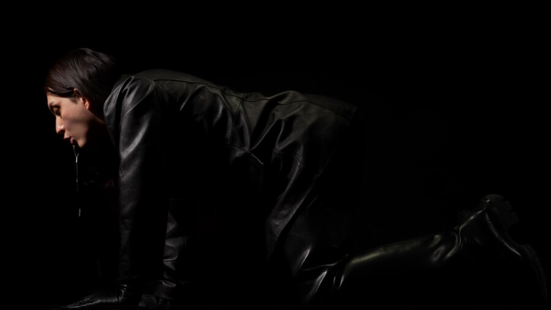

Glimmers: Performance by Camila Arévalo & Panel with Yelaine Rodriguez
Glimmers: Performance by Camila Arévalo & Panel with Yelaine Rodriguez
Mana Contemporary, 2233 S Throop St, Chicago, IL 60608
April 11, 2026
Join us at Mana Contemporary for a performance by artist Camila Arévalo and panel discussion with scholar Yelaine Rodriguez as part of programming for Glimmers: Currents of Illuminations.
Performance and Panel Schedule:
1pm – Performance by Camila Arévalo – 2nd Floor
3pm – Panel Discussion with Yelaine Rodriguez – 5th Floor
Camila Arévalo will present an expansion of their current body of work that uses the dynamics between horses, men, and animals—-please do not feed the men.